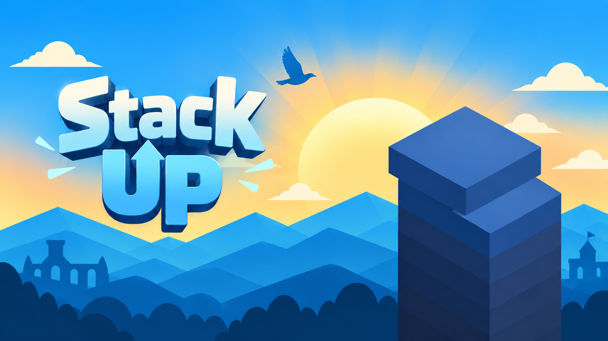

Tumpuk blok
Tempatkan setiap blok baru di atas blok sebelumnya dan lihat menaramu terus naik.

Ambil jeda sejenak dan uji timing kamu. Di Stack Up, setiap blok yang kamu tempatkan akan menentukan seberapa tinggi menaramu bisa bertahan.
Letakkan blok tepat di atas platform sebelumnya. Posisi yang pas memberi Perfect. Posisi yang meleset membuat area pendaratan berikutnya semakin kecil.
Lihat cara mainTempatkan setiap blok baru di atas blok sebelumnya dan lihat menaramu terus naik.
Sejajarkan dengan tepat untuk meraih Perfect dan menjaga lebar platform.
Bagian blok yang meleset terpotong. Semakin kecil platform, semakin besar tantangannya.
Semakin tinggi menara, setiap penempatan membutuhkan perhatian lebih dan timing yang makin presisi.
Tumpuk. Perfect. Naik Terus.